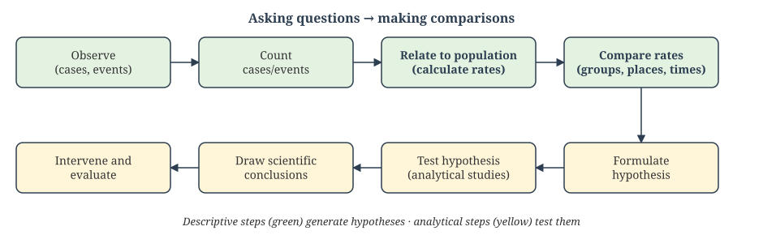
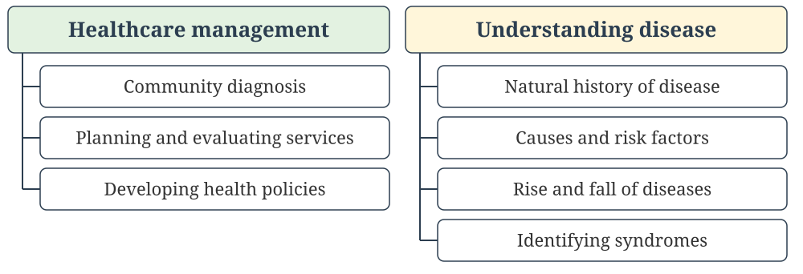
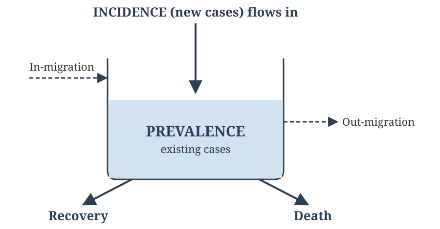
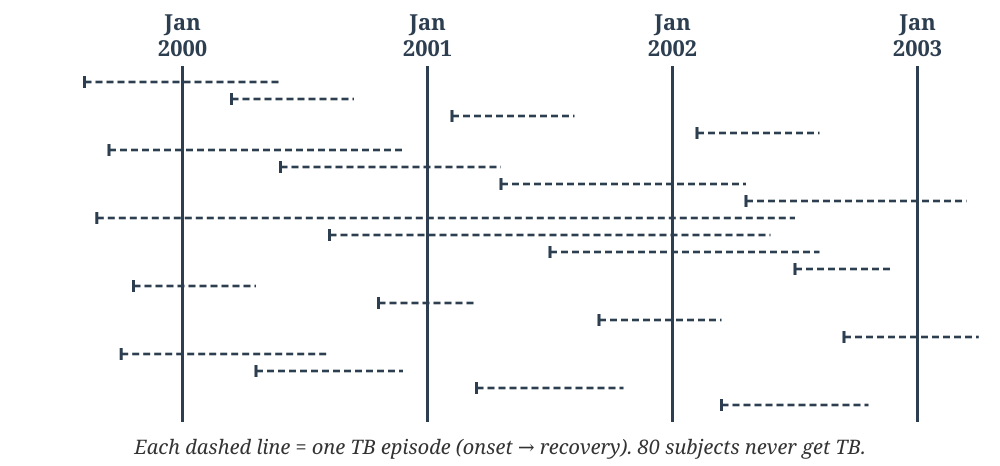
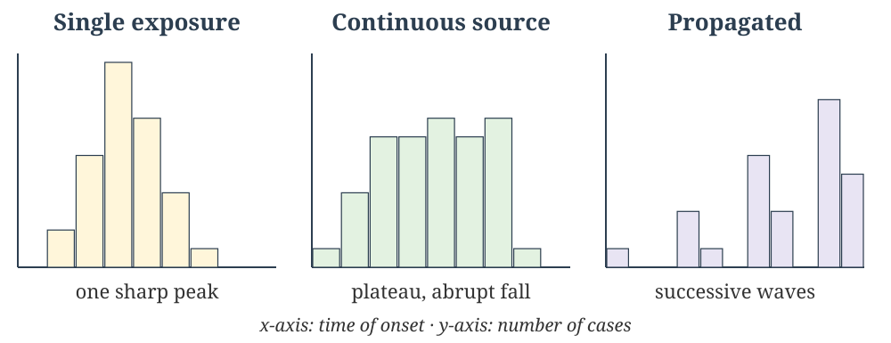
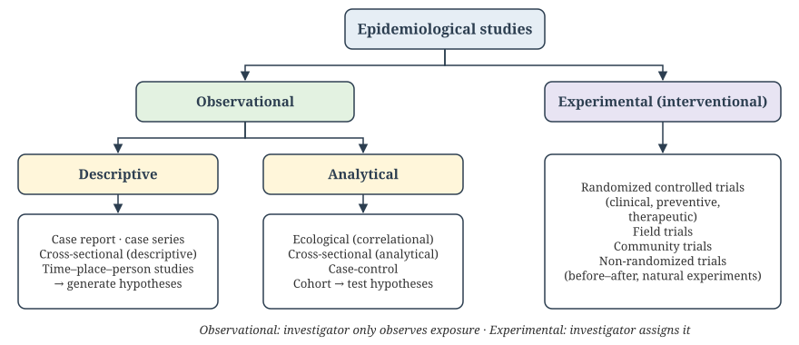

Definition, Measures of Frequency and Mortality, Data Sources, and Descriptive Epidemiology
Learning Objectives (CM7 Lectures 1–5):
NMC Community Medicine Code: CM7.1, CM7.3, CM7.4, CM7.5
🟢 MUST KNOW · 🟡 SHOULD KNOW · 🟣 MAY KNOW · 🧡 QUESTION
📚 Lecture 1 of 15 · CM7.L1
Epidemiology - definition, aims, epidemiological approach and uses
🟢 MUST KNOW
Epi (upon) + demos (people) + logos (study): the study of what befalls a population.
John Last’s definition (1988), the standard reference definition:
“The study of the distribution and determinants of health-related states or events in specified populations, and the application of this study to the control of health problems.”
🟢 MUST KNOW
The International Epidemiological Association lists three aims:
Ultimate aim: to eliminate or reduce the health problem, and to promote the health and well-being of society as a whole.
Basic components: disease frequency · distribution · determinants
🟢 MUST KNOW
Two core activities: asking questions (what is the event? how much? where? when? who? why?) and making comparisons (between groups, places and times).

🟢 MUST KNOW
| Clinical medicine | Epidemiology | |
|---|---|---|
| Unit of study | The individual patient | Defined population (community) |
| Starting point | A sick person seeks care | Sick and healthy people, including those who never reach a clinic |
| Core question | Which disease does this patient have? | Does this subject have the disease of interest? How many, where, when, why? |
| Method | History, examination, investigations | Counting, rates, comparison of groups |
| Outcome | Diagnosis and treatment of the patient | Community diagnosis, prevention and control |
Both rely on clinical skills: an epidemiologist still needs them to apply a case definition.
🟡 SHOULD KNOW

Morris’s seven uses (Park): historical study · community diagnosis · planning and evaluation · individual risks and chances · completing the clinical picture · identification of syndromes · searching for causes.
🟡 SHOULD KNOW
| Year | Person | Contribution |
|---|---|---|
| c. 400 BC | Hippocrates | Airs, Waters and Places: related disease to the environment |
| 1662 | John Graunt | Bills of Mortality: first quantification of birth and death data |
| 1747 | James Lind | Citrus fruit for scurvy: the first controlled clinical trial |
| 1796 | Edward Jenner | Cowpox inoculation against smallpox: vaccination |
| 1839 | William Farr | Systematic vital statistics; classification of causes of death |
| 1854 | John Snow | Cholera and the Broad Street pump: the first scientific epidemic investigation |
| 1948–51 | Framingham; Doll & Hill | CVD cohort; smoking and lung cancer (Doll a physician, Hill a statistician) |
| 1948 | MRC streptomycin trial | The first randomized controlled trial |
🟣 MAY KNOW
In 1854, a severe cholera outbreak in London’s Soho district killed over 600 people in about ten days. John Snow rejected the then-dominant miasma (“bad air”) theory. He mapped cholera deaths by address and traced them to a single water pump on Broad Street. Local authorities removed the pump handle, and the outbreak subsided.
Snow also compared death rates among households supplied by two water companies (the “Grand Experiment”): the Southwark & Vauxhall company drew sewage-polluted Thames water and the Lambeth company drew cleaner water.
Why it matters: this is the founding case study of modern epidemiology. It used descriptive and comparative data to identify a cause and act, before germ theory existed.
For written practice — work through these on paper; no auto-check for this slide.
Long Essay
Short Essay / Short Answer
Short Notes
🧡 QUESTION
Epidemiology is best defined as the study of:
🧡 QUESTION
Which of the following has been considered, at one time or another, a part of the definition of epidemiology?
🧡 QUESTION
Epidemiology differs from clinical practice in all of the following respects, EXCEPT:
🧡 QUESTION
The word “epidemiology” is derived from three Greek words, “epi,” “demos,” and “logos.” Here, “epi” stands for:
🧡 QUESTION
Community diagnosis means:
🧡 QUESTION
Which of the following does NOT fall within the purview of the uses of epidemiology?
🧡 QUESTION
The book “Airs, Waters and Places” was compiled by:
🧡 QUESTION
Edward Jenner’s basis for vaccination was the observation that prior infection with which disease protected against subsequent smallpox?
🧡 QUESTION
The first ever scientifically conducted clinical trial was:
🧡 QUESTION
The first ever scientific investigation of an epidemic was undertaken by:
🧡 QUESTION
Which statement is correct regarding Sir Richard Doll and Sir A. Bradford Hill?
🧡 QUESTION
Doll and Hill are famous for their studies regarding:
🧡 QUESTION
The discovery of penicillin by Sir Alexander Fleming was based on:
🧡 QUESTION
John Snow’s 1854 investigation is best known for:
📚 Lecture 2 of 15 · CM7.L2
Rates, ratios and proportions; measurement of mortality
🟢 MUST KNOW
These three terms are often confused, but they are mathematically distinct:
| Term | Definition | Numerator in denominator? |
|---|---|---|
| Ratio | Relation of one quantity to another, x : y | No: separate groups |
| Proportion | A ratio whose numerator is a subset of the denominator, x / (x + y) | Yes |
| Rate | A proportion with a time dimension built in | Yes, plus time |
Examples: sex ratio (females per 1000 males) and odds are ratios. “60% of the class is male” is a proportion. “12 new cases per 1,000 population per year” is a rate.
Tools of measurement in epidemiology: rates, ratios and proportions.
🟢 MUST KNOW
Rate = (Number of events in a specified period / Average population at risk during that period) × 10ⁿ
| Type of rate | Example |
|---|---|
| Crude | Crude birth and death rates: the whole population, unadjusted |
| Specific | Age-, sex- or cause-specific rates, for a defined subgroup |
| Standardized | Age-adjusted rates for fair comparison (Lecture 4) |
🟢 MUST KNOW
| Rate | Formula | Use |
|---|---|---|
| Crude Death Rate (CDR) | Deaths in the year ÷ mid-year population × 1000 | Simplest mortality measure; not comparable across different age structures |
| Specific Death Rate | Deaths in a subgroup (age/sex/cause) ÷ subgroup mid-year population × 1000 | Identifies high-risk groups |
| Case Fatality Rate (CFR) | Deaths from a disease ÷ cases of that disease × 100 | “Killing power” (severity); suits acute infections |
| Proportional Mortality Rate (PMR) | Deaths from a cause ÷ all deaths × 100 | Share of deaths; used when no population denominator exists |
Exam trap: PMR is not a risk measure. A rising PMR may only mean deaths from other causes fell.
🟡 SHOULD KNOW
Detailed fertility and MCH indicators are taught under CM10.
🟢 MUST KNOW
A town has a mid-year population of 50,000. In one year:
| Measure | Calculation | Result |
|---|---|---|
| CDR | 400 ÷ 50,000 × 1000 | 8 per 1000 |
| Age-specific DR (≥ 60) | 200 ÷ 5,000 × 1000 | 40 per 1000 |
| CFR (cholera) | 6 ÷ 120 × 100 | 5% |
| PMR (TB) | 40 ÷ 400 × 100 | 10% of deaths |
🟡 SHOULD KNOW
Sample Registration System, Statistical Report 2023 (Office of the RGI, released Sept 2025):
| Indicator | India, 2023 | Trend |
|---|---|---|
| Crude birth rate | 18.4 per 1000 | 19.1 in 2022 |
| Crude death rate | 6.4 per 1000 | 6.8 in 2022 |
| Infant mortality rate | 25 per 1000 live births | 40 in 2013 |
Retrieved 28 Oct 2026 from SRS 2023 summaries. Secondary sources differ slightly: some give CDR 6.3 and CBR 19.7. Check the official RGI report before an exam, and use the latest SRS bulletin.
For written practice — work through these on paper; no auto-check for this slide.
Short Essay / Short Answer
Short Notes
🧡 QUESTION
“12 new cases of disease per 1,000 population per year” is an example of a:
🧡 QUESTION
The measure of frequency in which the numerator is NOT a part of the denominator is:
🧡 QUESTION
The term “odds” is the same as a:
🧡 QUESTION
A proportion with an added relationship with time becomes a:
🧡 QUESTION
Which measure best reflects the severity of a disease among those affected?
🧡 QUESTION (select ALL that apply)
Measures of mortality commonly used in public health include:
🧡 QUESTION
Assertion (A): Case fatality rate is a useful indicator of disease severity.
Reason (R): It measures the total deaths in the population irrespective of disease.
📚 Lecture 3 of 15 · CM7.L3
Measurement of morbidity - incidence and prevalence
🟢 MUST KNOW
Incidence counts new cases occurring in a population at risk during a defined period.
| Cumulative incidence (risk) | Incidence density (incidence rate) | |
|---|---|---|
| Denominator | Persons at risk at the start of the period | Total person-time at risk |
| Formula | New cases ÷ population at risk | New cases ÷ person-years at risk |
| Unit | Proportion over a stated period (e.g. 2% in 3 years) | Per person-year (a true rate) |
🟢 MUST KNOW
Prevalence counts all existing cases (old + new) at a given time:
Prevalence = (All current cases at a point or period / Estimated population at that time) × 100
Prevalence is a proportion, not a rate. It measures the burden of disease.
🟢 MUST KNOW

P = I × D (steady state)
🟢 MUST KNOW
| Incidence | Prevalence |
|---|---|
| New cases only | All existing cases |
| Measures risk | Measures burden |
| Needs follow-up (cohort) | One-time survey (cross-sectional) |
| Best for etiology/causation: exposure must precede onset | Best for planning services, beds, drugs, manpower |
| Evaluates primary prevention | Estimates chronic disease load; affected by duration and survival |
| Suited to acute disease | Suited to chronic disease |
🟢 MUST KNOW
A special form of incidence used when a population is exposed to risk for a limited period, typically during an outbreak:
Attack Rate = (New cases during the outbreak / Population at risk) × 100
It is expressed as a percentage over the whole exposure episode, not per year.
Secondary attack rate (SAR): new cases among susceptible contacts of a primary case, within one incubation period. It measures infectiousness and is covered with infectious disease dynamics in Lecture 10.
🟡 SHOULD KNOW
Population at risk: the denominator must include only people capable of developing the disease. Exclude the already immune or already affected, and use women only for cervical cancer. A wrong denominator is a common source of error.
🟡 SHOULD KNOW
Use this figure for the TB questions in the Self-Check below.

For written practice — work through these on paper; no auto-check for this slide.
Short Essay / Short Answer
Short Notes
Reasoning Type
🧡 QUESTION
Which measure best reflects the risk of developing disease over a specified period among initially disease-free individuals?
🧡 QUESTION
A district surveillance officer wants to compare the current burden of diabetes between two urban wards to plan clinic services. The most appropriate measure is:
🧡 QUESTION
A disease has high incidence but short duration because of rapid recovery. In such a situation, prevalence is likely to be:
🧡 QUESTION
A disease with a long duration but low incidence will typically show:
🧡 QUESTION
Under stable conditions, the relationship between incidence (I), prevalence (P) and duration (D) is:
🧡 QUESTION
The proportion of persons found to have the disease condition of interest out of those examined gives the:
🧡 QUESTION
Identify the correct statement:
🧡 QUESTION
In which of the following frequency measures is the denominator “person-time”?
🧡 QUESTION
In which of the following disease frequency measures can the numerator be greater than the denominator?
🧡 QUESTION
Which of the following measures is NOT recommended for scientific statistical analysis of epidemiological data?
🧡 QUESTION
In a survey of tobacco smoking among adult males, 190 of the 950 persons surveyed were smokers. The correct frequency measure and its value are:
🧡 QUESTION
BP assessment of 1000 male university students in January 2016 found 50 hypertensive. What is the prevalence of hypertension in January 2016?
🧡 QUESTION
In the same students, the remaining 950 normotensives were followed for 3 years, and 19 developed hypertension by January 2019. What is the incidence of hypertension?
🧡 QUESTION
Refer to the TB timeline figure (100 HIV-positive subjects, Jan 2000 – Jan 2003). What is the prevalence of TB in January 2000?
🧡 QUESTION
Refer to the TB timeline figure (100 HIV-positive subjects, Jan 2000 – Jan 2003). What is the prevalence of TB in January 2002?
🧡 QUESTION
Refer to the TB timeline figure (100 HIV-positive subjects, Jan 2000 – Jan 2003). What is the 3-year incidence of TB for 1 Jan 2000 to 1 Jan 2003?
🧡 QUESTION
Refer to the TB timeline figure (100 HIV-positive subjects, Jan 2000 – Jan 2003). What is the incidence of TB for the year 2002?
🧡 QUESTION
Refer to the TB timeline figure (100 HIV-positive subjects, Jan 2000 – Jan 2003). What is the period prevalence for January 2000 to January 2002?
🧡 QUESTION
Assertion (A): Prevalence is useful for planning health services.
Reason (R): Prevalence reflects only new cases occurring in a population.
📚 Lecture 4 of 15 · CM7.L4
Standardisation of rates; sources of epidemiological data
🟢 MUST KNOW
Crude rates aren’t comparable between populations with different age (or sex) structures. Standardization removes that distortion (confounding by age) by applying a common “standard population”.
| Direct method | Indirect method | |
|---|---|---|
| Needs | Age-specific rates of each study population | Only total deaths and the age structure of the study population |
| Applies | Each population’s own rates → one standard population | Standard rates → the study population |
| Result | Age-adjusted (standardized) rate | SMR = observed deaths ÷ expected deaths |
| Use when | Populations are large with reliable rates | Groups are small, or age-specific rates are unavailable (occupational studies) |
An SMR > 1 (or > 100%) means more deaths than expected from the standard population’s experience.
🟢 MUST KNOW
| Age (y) | Town A pop. | Deaths | Town B pop. | Deaths | Rate (both) per 1000 | Standard pop. (A+B) | Expected deaths |
|---|---|---|---|---|---|---|---|
| 0–29 | 6,000 | 6 | 2,000 | 2 | 1 | 8,000 | 8 |
| 30–59 | 3,000 | 9 | 4,000 | 12 | 3 | 7,000 | 21 |
| ≥ 60 | 1,000 | 40 | 4,000 | 160 | 40 | 5,000 | 200 |
| Total | 10,000 | 55 | 10,000 | 174 | 20,000 | 229 |
🟡 SHOULD KNOW
Mine workers: 27 deaths observed in one year. Age-specific death rates of the national (standard) population are applied to the workers’ age structure:
| Age (y) | Workers | Standard rate per 1000 | Expected deaths |
|---|---|---|---|
| 20–39 | 4,000 | 2 | 8 |
| 40–59 | 1,000 | 10 | 10 |
| Total | 5,000 | 18 |
SMR = Observed ÷ Expected = 27 ÷ 18 = 1.5 (150%)
The workers die at 1.5 times the rate expected for their age structure, which points to an occupational hazard.
🟢 MUST KNOW
| Source | Key facts |
|---|---|
| Census | Every 10 years. First 1872 (non-synchronous), synchronous since 1881. Census Act 1948, conducted by the Registrar General & Census Commissioner (MHA). De facto method, reference date 00:00 hrs, 1 March. Complete enumeration. Last completed: 2011. Census 2027 reference date 1 March 2027 (1 Oct 2026 in snow-bound areas) |
| Civil registration (CRS) | RBD Act 1969: compulsory registration of births and deaths (21 days), uniform across India. Vital statistics = births, deaths, marriages, divorces, foetal deaths |
| SRS | RGI, from 1964–65 (pilot), full scale 1969–70. Dual record system: continuous enumeration plus an independent half-yearly survey, then matching. Separate rural and urban sample units. Source of CBR, CDR, IMR, MMR, TFR |
| MCCD and verbal autopsy | Cause-of-death data (next slide). Verbal autopsy is used in SRS sample units |
🟡 SHOULD KNOW
Data → information → intelligence: raw data, summarized into information, and evaluated by experts into intelligence, which is the basis for action.
🟢 MUST KNOW
Medical Certification of Cause of Death (MCCD) under the RBD Act. Form 4 is for institutional deaths and Form 4A for non-institutional deaths. It follows the WHO international format.
Common errors: writing the mode of death (“cardiac arrest”, “respiratory failure”) as a cause, wrong sequence, more than one cause per line, abbreviations, missing intervals, vague terms (“old age”).
Verbal autopsy: a structured interview of relatives or caregivers about signs and symptoms before death, coded by physicians or software. It is used where deaths occur without medical attention, as in the SRS Million Death Study.
For written practice — work through these on paper; no auto-check for this slide.
Short Essay / Short Answer
Short Notes
Reasoning Type
Exercise
🧡 QUESTION
A health planner wants to compare mortality rates between two populations with different age structures. The most appropriate method is to use the:
🧡 QUESTION
The most appropriate public health use of a Medical Certificate of Cause of Death (MCCD) is:
🧡 QUESTION
In verbal autopsy, the primary source of information is:
🧡 QUESTION
Assertion (A): A properly completed MCCD improves the quality of mortality data.
Reason (R): Incorrect sequencing and nonspecific terms in certificates reduce the usefulness of cause-specific statistics.
🧡 QUESTION
A national tuberculosis survey used trained investigators to collect data from randomly selected households to measure the magnitude of TB and identify high-risk groups. This is an example of:
🧡 QUESTION
What advantage do death certificates have, in our country, as a source of epidemiological information?
🧡 QUESTION
The reference (referral) date for the Indian Census 2001 was:
🧡 QUESTION
The “census point” is taken as the midnight between:
🧡 QUESTION
The sex ratio in India is described as:
🧡 QUESTION
In India, the census is undertaken by which method?
🧡 QUESTION
The authority for overall administration and conduct of the census in India is the:
🧡 QUESTION
Which of the following enumeration methods has legal backing through an Act passed by Parliament?
🧡 QUESTION
Which of the following is NOT a part of vital statistics?
🧡 QUESTION
The annual publication “National Health Profile – India” is published by:
🧡 QUESTION
Which of the following is the latest in the series of National Family Health Surveys (NFHS)?
🧡 QUESTION
The authority for overall administration and conduct of the Sample Registration System (SRS) in India is the:
🧡 QUESTION
Once data have been summarized to obtain information, and then evaluated by experts from socioeconomic, demographic and health angles, they are known as:
🧡 QUESTION
Which of the following enumeration methods has separate units for enumeration in rural and urban areas?
🧡 QUESTION
The “double recording” (dual record) system of enumeration is used in which of the following?
🧡 QUESTION
The “Rapid Household Survey” and “Facilities Survey” are conducted under the overall responsibility of the:
🧡 QUESTION
In 2016, results for 13 states and 2 union territories were released in respect of which survey?
🧡 QUESTION
Which of the following is a good method of obtaining data on morbidity due to a number of common and important diseases in our country?
🧡 QUESTION
Which source of information is best for developing a sentinel surveillance system for important diseases?
📚 Lecture 5 of 15 · CM7.L5
Descriptive epidemiology - time, place and person
🟢 MUST KNOW
Descriptive epidemiology describes who, where and when: the first step before asking why (analytical epidemiology). Its output is a hypothesis.
Steps in a descriptive study:
🟢 MUST KNOW
Secular trends help doctors and planners judge whether a problem is growing, and evaluate the long-term impact of programmes.
🟢 MUST KNOW

🟡 SHOULD KNOW
🟡 SHOULD KNOW
| Variable | Example of what it reveals |
|---|---|
| Age | Bimodal age curve in Hodgkin lymphoma; childhood infections; NCDs rise with age |
| Sex | More IHD in men, more gallstones and thyroid disease in women |
| Ethnicity/race | Sickle-cell disease, thalassaemia |
| Occupation | Silicosis, byssinosis, needle-stick infections |
| Socioeconomic status | Social gradient in TB, malnutrition, infant mortality |
| Marital status, behaviour | Cervical cancer and sexual behaviour; smoking, alcohol, diet |
| Stress, migration | Hypertension, mental illness |
🟡 SHOULD KNOW
A clinician can revise a diagnosis later. An epidemiologist cannot: the study needs a definition fixed in advance that any field worker can apply the same way.
Changing the definition mid-study breaks comparability between phases.
🟡 SHOULD KNOW
A variable is a characteristic that differs between subjects (age, sex, BP). Its values form a data set.
| Scale | Type | Example |
|---|---|---|
| Nominal: dichotomous / polychotomous | Qualitative | Survived/died; lung, heart or other disease |
| Ordinal | Qualitative (ordered) | No, mild, moderate or severe blockage |
| Numerical discrete | Quantitative | Gravida, number of children |
| Numerical continuous | Quantitative | Coronary diameter, Hb |
🟢 MUST KNOW

A 2 × 2 table (exposure × outcome) can only be built when groups are compared, so it belongs to analytical and experimental studies, never purely descriptive ones.
🟡 SHOULD KNOW
Cross-sectional study: measures exposure and outcome at the same time in a defined population.
Ecological (correlational) study: the unit of analysis is a group or population, not individuals. An example is national smoking rates against national lung-cancer rates.
For written practice — work through these on paper; no auto-check for this slide.
Long Essay
Short Essay / Short Answer
Short Notes
🧡 QUESTION
Which of the following is a “person” variable in descriptive epidemiology?
🧡 QUESTION
“The incidence of malaria is very high among migrant labourers in Odisha, Jharkhand and Chhattisgarh.” This statement includes which component(s) of epidemiology?
🧡 QUESTION
In the statement “55% of pregnant women in India are likely to have anaemia,” which component of epidemiology is NOT included?
🧡 QUESTION
In the statement “Tobacco smoking increases the risk of IHD by three times,” the epidemiological aspect covered pertains to:
🧡 QUESTION
During an outbreak investigation, the number of new cases rises rapidly over a short period and then falls sharply after removal of a common source. This epidemic curve is most consistent with a:
🧡 QUESTION
Descriptive studies perform which of the following functions?
🧡 QUESTION
A 2 × 2 table showing the four cells E+O+, E+O−, E−O+ and E−O− is seen in a:
🧡 QUESTION
The 2 × 2 table of exposure (present/absent) against outcome (present/absent) will NOT be formed in a:
🧡 QUESTION
In a standard 2 × 2 table, cell “a” represents all those who are:
🧡 QUESTION
Another name for an experimental study is:
🧡 QUESTION
The main difference between an experimental and a cohort design is that:
🧡 QUESTION
A study on children with acute glomerulonephritis found that 20% gave a history of acute sore throat 3–4 weeks before onset of renal symptoms. This is an example of a:
🧡 QUESTION
For establishing a cause-and-effect relationship, we need to undertake a:
🧡 QUESTION
Case-control and cohort studies belong to which type of epidemiological design?
🧡 QUESTION
In which study are the exposure and outcome variables studied at the same point of time?
🧡 QUESTION
In a retrospective study, we find the history of:
🧡 QUESTION
When the investigator creates two groups by randomization and introduces the exposure in one group while withholding it from the other, it is known as a:
🧡 QUESTION
To study the incidence of malaria according to various age and sex groups in a village, we need to undertake a:
🧡 QUESTION
“Comparison between two groups” is the hallmark of a(n):
🧡 QUESTION (select ALL that apply)
Typical epidemiological study designs include:
🧡 QUESTION
A country-level comparison of average salt intake against average blood pressure across nations, without individual-level data, is an example of:
🧡 QUESTION
A study that actively assigns an intervention to participants, rather than only observing existing exposure, is classified as:
🧡 QUESTION
A quality, characteristic or constituent of a subject that can be measured and is likely to differ from one person to another is called a:
🧡 QUESTION
Which of the following is a “variable” from the epidemiological and statistical points of view?
🧡 QUESTION
A “numerical discrete scale” belongs to which class of measurement scales?
🧡 QUESTION
Match each method of recording data with its scale of measurement. A satisfaction scored −2 to +2; B gravida status; C survived/died at 5 years; D angiogram: no/mild/moderate/severe blockage; E actual coronary diameter; F diagnosis: lung / heart / other disease. Scales: (i) dichotomous–nominal (ii) numerical–continuous (iii) polychotomous–ordinal (iv) numerical–ordinal (v) discrete–numerical (vi) nominal–polychotomous.
🧡 QUESTION
A study set out to find what percentage of visitors of commercial sex workers in Mumbai use condoms, but interviewed only truck drivers eating at one roadside restaurant outside Mumbai. Condom use was 25%. This conclusion is likely to suffer from:
🧡 QUESTION
Which of the following correctly lists the synonyms of “reference population”?
🧡 QUESTION
The requirements of a sample are that it should be:
🧡 QUESTION
An organized collection of the values of the various variables to be used for further analysis in an epidemiological study is known as a:
🧡 QUESTION
In which of the following is the sample studied the same as the total population?
🧡 QUESTION
If the case definition for dengue is “any person with fever for 1 day,” this definition is:
🧡 QUESTION
Fever rising in a step-ladder pattern, with initial constipation followed by pea-soup stools and TLC below 6000/mm³, falls into which category of case definition for enteric fever?
Want to practice? The Epidemiology Question Bank has every question from this chapter with answer keys.
Next Chapter: Epidemiologic Methods (CM7 Lectures 6–9)
← Previous | Top | Contents | Chapter 3/29 | Next Chapter →
← Previous | Top | Contents | Chapter 3/29 | Next Chapter →